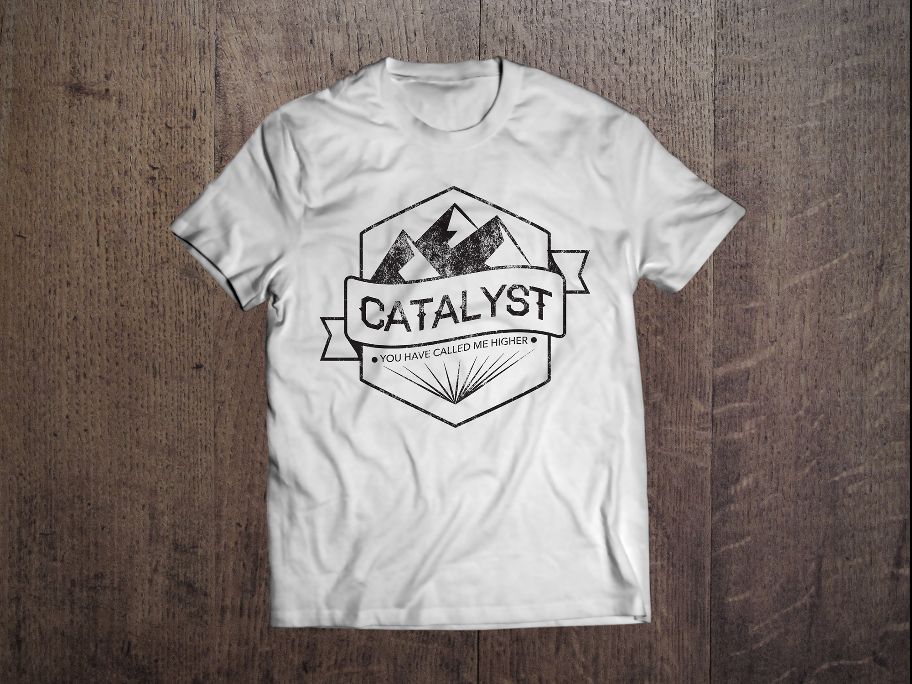
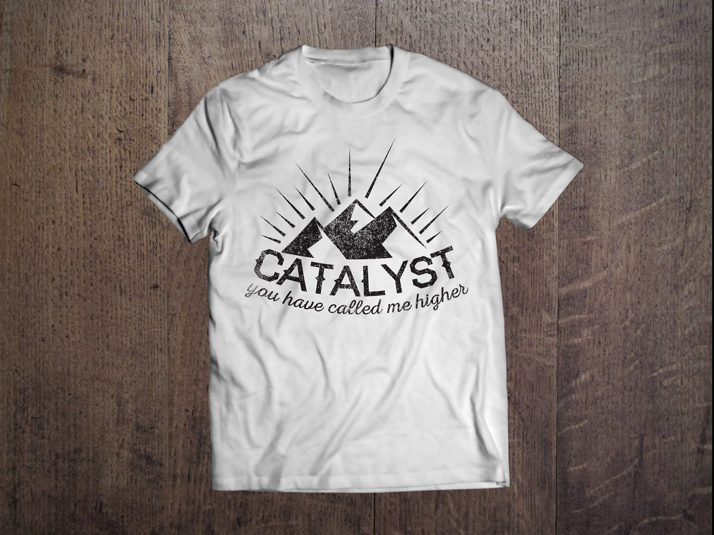
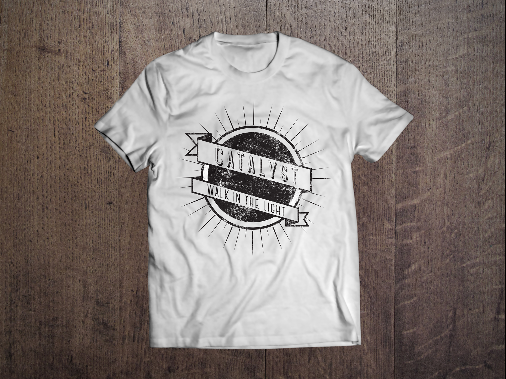
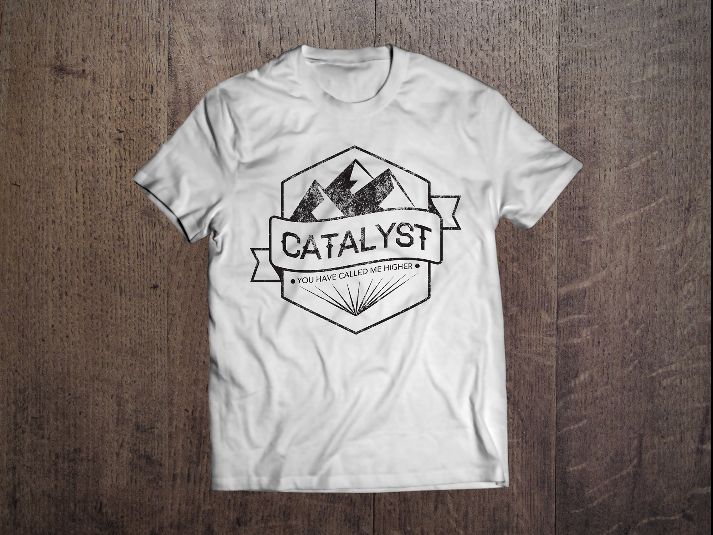
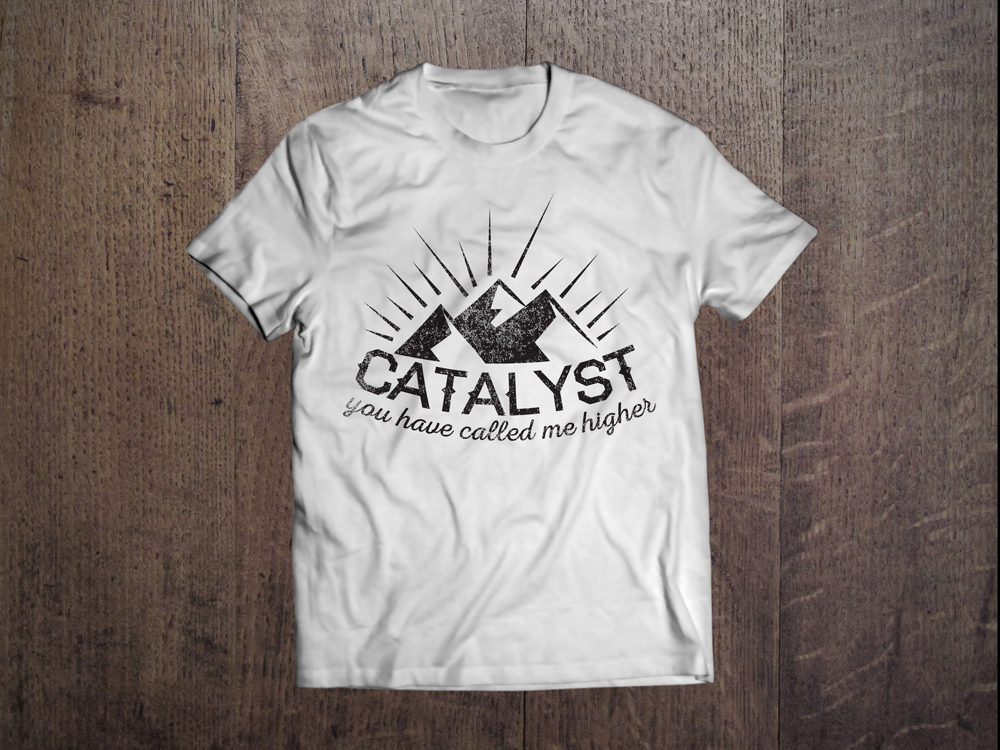
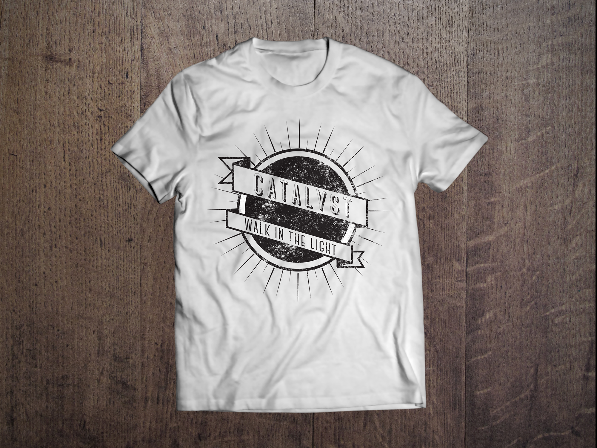

These are a few t-shirt designs I did for the fellowship Catalyst that I am a part of at UC Davis. Our mission is to invite students into Jesus’ family through leadership development, intergenerational connections, and sticky community. I did a few iterations off of “walking in the light” and the lightbulb that remains part of our current logo. I tried to think about what was important to emphasize and what would look good and readable on a t-shirt, and potentially other places, like posters.
 




